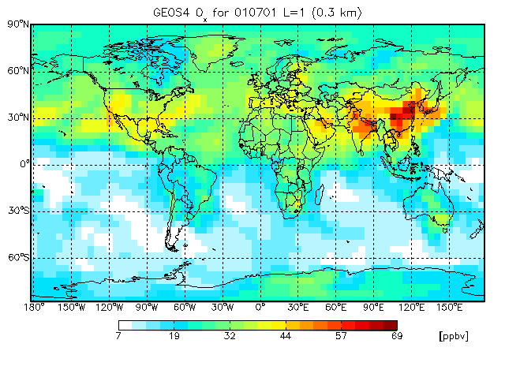

GAMAP v2–19 User Guide
Previous | Next | Printable View (no frames)


Follow the procedure below to start using GAMAP right away! Please refer to Chapter 6 for more detailed information on the following GAMAP input files: gamap.defaults, tracerinfo.dat, and diaginfo.dat. These files describe how you can customize GAMAP for your needs.
1. Start IDL by typing idl at the Unix command prompt. 2. If you desire to display more than one plot per page, use the MULTIPANEL routine to specify the number of rows and columns of graphical output. For example, to put 4 plots on the page, type the following at the IDL> prompt:
multipanel, 4This will create a page layout with 2 rows and 2 columns. If you you want to specify a page layout with 3 rows and 2 columns of plots, type:
multipanel, rows=3, cols=2It is not necessary to call MULTIPANEL if you only want to display one plot per page.
3. Type gamap at the IDL> command line. GAMAP will display the following greeting message with the current version number:
============================================================= WELCOME TO G A M A P ----- Version 2.19, Dec 2015 Global Atmospheric Modeling (output) Analysis Package Martin Schultz and Bob Yantosca, Harvard University =============================================================This message will only be displayed the first time you start GAMAP.
4. GAMAP will now ask you to select a data file. If you do not specify a file name via the FILENAME keyword (see below) GAMAP will pop open a dialog box and ask you to click on a file.
GAMAP supports the following file types:
- ASCII punch files (i.e. GISS–II or GISS–II–PRIME model output)
- Binary punch files (i.e. GEOS–Chem model output)
- GEOS–Chem met field files
- netCDF files from GMI (Global Modeling Initiative)
- netCDF files created by GAMAP helper routine bpch2nc.pro
- netCDF files adhering to the COARDS convention
- HDF4–EOS gridded data files (especially met field files from GMAO)
Binary punch files contain the model name and grid resolution information internally. Upon reading a binary punch file, GAMAP uses this model name and grid resolution to information automatically determine the dimensions of the data blocks stored inside the file. netCDF and HDF4-EOS files contain complete metadata about the contents of the file.
5. At this point, GAMAP will read the complete block header information from this file and display the available records. You will see a listing similar to this:
CATEGORY ILUN TRCNAME TRC UNIT TAU0 DATE DIMENSIONS 1 : DAO-FLDS 20 11001 W/m2 179664.00 2005070100 72 46 1 1 : BIOBSRCE 20 NOx 45001 mol/cm2/s 179664.00 2005070100 72 46 1 2 : BIOBSRCE 20 CO 45004 mol/cm2/s 179664.00 2005070100 72 46 1 3 : BIOBSRCE 20 C2H6 45021 molC/cm2/s 179664.00 2005070100 72 46 1 4 : BIOBSRCE 20 PRPE 45018 molC/cm2/s 179664.00 2005070100 72 46 1 ... 201 : ANTHSRCE 20 NOx 1001 mol/cm2/s 179664.00 2005070100 72 46 1 202 : ANTHSRCE 20 CO 1004 mol/cm2/s 179664.00 2005070100 72 46 1 203 : ANTHSRCE 20 PRPE 1018 molC/cm2/s 179664.00 2005070100 72 46 1 204 : ANTHSRCE 20 C3H8 1019 molC/cm2/s 179664.00 2005070100 72 46 1 Enter S as first character to save data blocks. Select data records. Example: 1,3-9,20 (default : 1, Q=Quit, S=Save) >>The TAU0 values define the model time in hours since 1985 (GEOS-Chem) or hours since 1980 (GISS). The corresponding YYYYMMDDhh values are also shown. You can also use nymd2tau.pro to convert date values (YYYYMMDD, hhmmss) to tau values, or tau2yymmdd.pro for the inverse.
You can now select one or more records to be displayed. Some examples:
1 (chooses only first record) 2,5 (select entries 2 and 5) 1-4 (select entries 1 through 4) 1-4,7,10-12If instead you type an s or an S as the first character, such as:
S1-204then GAMAP will save records 1 to 204 into a binary punch file instead of plotting them. You will be then prompted (via dialog box) to supply a name for the binary punch file.
Another note: GAMAP will save the data block range from each call. For example, if you saved the first 204 data blocks, as described in the above example, then the next time you start GAMAP, it will ask you if you want to plot data blocks 1 through 204. This allows you to just hit RETURN if you want to accept the same data block range as last time.
6. Once you have selected a data block or range of data blocks, GAMAP will then ask you to define a longitude, latitude, and altitude range which will be used to construct the plots.
GAMAP will ask you for the altitude range first:
Enter level or level range (default : 1..47, Q=Quit) >>You may do one of the following things:
- You can hit RETURN to accept the default values.
- If you want to specify a single level, type one number and hit RETURN.
- If you want to specify a range of numbers, type two numbers separated by a space and then hit RETURN.
After you have entered GAMAP will ask you for the longitude range:
Enter longitude or longitude range (default : -182.50..177.50, Q=Quit) >>You can do the same things as above: accept the defaults, specify a single longitude, or specify a range of longitudes.
Finally, GAMAP will ask you for the latitude range:
Enter latitude or latitude range (default : -88..88, Q=Quit) >>And once more you can proceed as described above.
GAMAP will save your selections so that the next time you call GAMAP these will become the default values. This makes it easy to create identical plots — you can just keep hitting RETURN to accept the defaults.
7. GAMAP will then tell you how many dimensions your selected data block has, and it will ask whether you want to perform an average or total operation on either of these dimensions:
% Selected data is 2-D [ Longitude,Latitude ]. Do you want to average or total the data? (0=No averaging, 1=lon, 2=lat, 4=alt, 8=Total, Q=Quit, Default=0)The values displayed as options are binary flags. You can combine them as you wish by adding them together. Example: 3 will average over longitude and latitude, 12 will total over altitude. Be aware that you lose one data dimension for each average or total operation you select. GAMAP can handle any number of dimensions from 0 to 3. If you end up with 0-D (one point), you will get an average or total value over the region that you selected which will be printed on the screen (no plot is produced). A 1-D data set results in a line plot, and a 3-D data set causes GAMAP to display a 3-D isocontour surface.
In addition to the isopleth map, GAMAP gives you many are 2-D plot options as well:
0 = B/W Contour lines 1 = Colored contour lines 2 = Filled contours 3 = Smooth Pixel Plot 4 = Coarse Pixel Plot <--- DefaultThe default is to make coarse pixel plots which have a "boxy" quality to them. Coarse pixel plots also save memory when creating PostScript or GIF output. For printed output, we encourage you to try one of the contour options.
8. GAMAP will then ask you if you want to perform some unit conversion on the data before the final plot is displayed. You will see a prompt such as this:
Units: ppbv Enter new unit for all (Q=Quit, default: don't touch) >>If you want to change the unit from ppbv to pptv, simply type pptv at the prompt and hit RETURN.
NOTE: Not all unit conversions were implemented. GAMAP can handle simple unit conversions such as pptv to ppbv and vice-versa, or molec/cm2/s to Tg. If you need to do more complicated unit conversions, it may be worthwhile to write your own code.
9. If you have set up a multi-panel environment before calling GAMAP (Step #2 above), GAMAP will fill the page with the selected records and start a new page when you reach the maximum number of plots per page.
If you want to combine different plots on one page you will have to call GAMAP several times (in this case you have to manually open and close the postscript device if you want to produce postscript plots). In the multi-panel environment, no animation is possible.
Note: for the first plot, a window will be opened automatically if you haven't done so before. Otherwise GAMAP will plot into the current window (which allows you to display various model results together by changing the current window with
window, N [, options]10. If you wish to create animations, then you must have turned off the multipanel environment with:
multipanel, /offThen start GAMAP again and follow steps 3-8 as listed above and select all of the data blocks that you wish to include in the animation.
At present, the best way to create an animation is to have GAMAP save out each individual plot to a different graphics file format (such as GIF, JPEG, or PNG). Then you can use an external editor (such as whirlgif) to link the individual images into a movie file.
Let's assume that your gamap.defaults file (Section 6) is set up to save individual frames to GIF files.
NOTE: GIF file format support was removed in IDL version 5.4, but since has been restored in IDL versions 6.2 and higher. If you are using an older version of IDL we suggest that you upgrade to the most recent version so that you can take advantage of GIF file support.
You may also edit your gamap.defaults file to save to other file types as well. Or you can force GAMAP to ask you to save out to specific file type from the command line. For example:
gamap, /do_gifwill force GAMAP to ask you if you want to save each frame as a GIF file.
After you have selected the units for all of your data blocks (step 9 above), GAMAP will ask you:
Save frames to GIF files (Y/N/Q) [N] :If you type Y then GAMAP will ask you to specify the GIF file name:
GIF File Name (default : frame%NNN%, Q=Quit ) >>If you are only going to save a single GIF file, then you can type a filename such as "myfile" and GAMAP will save the image on the screen to this GIF file. (The *.gif extension) will be added automatically by GAMAP.
If you have chosen more than one data block to save to a GIF file, then it is recommended to use the filename frame%NNN% (the *.gif extension will also be automatically added by GAMAP.) When saving each file name, GAMAP will replace the text %NNN% with the actual frame number. For example, if you choose frame%NNN% as your GIF file name, then GAMAP will create 10 GIF files named frame001.gif, frame002.gif, frame003.gif, ..., frame010.gif.
If you save images to GIF format files, then you can use the whirlgif program to link several frames into an animated GIF file. (Whirlgif is available on the Internet as Unix freeware). Let's assume you have a series of files named frame001.gif, frame002.gif, etc. To combine these into a single animated GIF image named animation.gif , type the following at the Unix command prompt:
whirlgif -loop -time 0.010 -o animation.gif frame*gifThis will cause whirlgif to create an animatable GIF with a 1 second delay.
This should almost get you going. Feel free to explore the various options, but then read on to learn about the most important GAMAP command line options!

4.2 Important GAMAP command line options
Here are some of the most often-used GAMAP command line options.

Perhaps the most important keyword to GAMAP is /NOFILE. If you set this keyword, GAMAP will try to work with the records that you have read previously and not prompt you for another data file. If nothing was read in before, the /NOFILE option is ignored. With /NOFILE you have all records available from all files that you opened during this GAMAP session. Without this keyword you will only get the records displayed that belong to the file you select. Use the FILENAME keyword to specify a data file or override the default filemask in gamap.defaults.
/NOFILE overrides FILENAME, but FILENAME will be used if you have not loaded any data previously.

4.2.2 DIAGN, TRACER, TAU0, DATE
Use these keywords and parameters to restrict the data records to choose from. DIAGN is a parameter (the only one) and can be a diagnostic name or number (see Chapter 6.8: The DIAGINFO structure).
TRACER is a tracer number or vector containing multiple tracer numbers. Some diagnostics use tracer numbers offset by multiples of 100 or 1000 (see tracerinfo.dat in section XX). GAMAP will only interpret the last two digits and display all diagnostics with this tracer unless you also specify DIAGN.
With TAU0 and DATE you can identify individual time steps. DATE must be a (long) integer value of form YYYYMMDD. For example you can type:
gamap, date=20100301L
making sure to specify 20100301 as a long integer. If you use DATE, the hour is always assumed to be 00 GMT. If you want to specify other hours you must use the TAU0 keyword. You can pass the result from function NYMD2TAU as follows:
gamap, tau0=nymd2tau( 20100301,140000 )
(This example will select a data record for 1400 GMT on March 3, 2010.)
CAUTION: Currently, the conversion from DATE to TAU0 assumes the GEOS–Chem model as default (i.e. TAU0 = 0 is 00:00 GMT on 1 Jan 1985). For correct results with the GISS models, you must use the NYMD2TAU function as shown above with the /GISS keyword
TRACER, TAU0 and DATE may be either be single values or vectors.

Use these keywords to specify the data range to be used for colorbars in pixel plots (and for 1-D plots). If you select more than one record, GAMAP will automatically turn /AUTORANGE on unless you are working in a multi-panel environment. YRANGE must be a 2-element vector with min and max value to plot.
For example, if you want to restrict the plot range of a CO tracer between 0 and 300 ppbv, type:
YRANGE = [0, 300]
and that will cause the lowest color level to be 0 ppbv and the highest color level to be 300 ppbv.

The /LOG flag is not an intrinsic GAMAP keyword but simply passed on to ctm_plot.pro (like all other keywords that are not handled explicitly by gamap.pro). It has only effect in 1-D and pixel plots. In contour plots you can use C_LEVEL to specify your own contour levels. Default is to use logarithmically spaced levels at 1, 2, 5, 10, etc. or a linear set of 9 levels if your data vary over less than a factor of 10. A typical example would be (for CO):
gamap, /nofile, tracer=4, c_level=findgen(20)*5+40
(This creates contour levels at 40, 45, 50, 55, ..., 135)

Set this keyword to produce polar stereographic plots with GAMAP. /POLAR will force the longitude range to -180..180 and the latitude range to extend to one of the poles. Note that polar plots only work with contours (however, if you use filled contours with about 30 contour levels (specified via the C_LEVEL keyword), the plot will look almost like a smoothed pixel plot!

4.2.6 /PS, OUTFILENAME, /TIMESTAMP
The /PS switch forces GAMAP to produce postscript output, and OUTFILENAME can be used to specify the postscript filename (it overrides the default in gamap.defaults).
If /PS is set, no plot will be displayed on the screen, but GAMAP will plot directly into the postscript file. /PS is automatically turned off when you select multiple records in the single-panel mode, i.e. when GAMAP creates an animation sequence. /PS and OUTFILENAME are also ignored when the current device is already set to `PS'. This allows to create "heterogeneous" multi-panel plots with several calls to GAMAP.
/TIMESTAMP forces to set or omit a timestamp label on postscript plots and overrides the default setting in gamap.defaults. Use TIMESTAMP=1 (or /TIMESTAMP) to force a timestamp label, or TIMESTAMP=0 to omit it. GAMAP uses the standard label from close_device.pro which consists of user ID and date.

4.2.7 /DO_GIF, GIFFILENAME,
/DO_JPEG, JPEGFILENAME,
/DO_PNG, PNGFILENAME,
/DO_BMP, BMPFILENAME,
/DO_TIFF, TIFFFILENAME,
FRAME0
These keywords override the respective settings in gamap.defaults.
/DO_GIF, /DO_JPEG, /DO_PNG, /DO_BMP, /DO_TIFF will cause gamap to save to GIF, JPEG, PNG, BMP, and TIFF graphics file formats, respectively.
GIFFFILENAME, JPEGFILENAME, etc. are used to specify the file name of the GIF, JPEG, etc. output file. GIFFILENAME, JPEGFILENAME, etc. may contain one of the following variables which will be replaced by the current frame number: %N%, %NN%, %NNN%, %NNNN%, %NNNNN%.
To start with a specific frame number instead of 1, specify that with the FRAME0 keyword.

The RESULT keyword returns a structure containing the last selected subset of data with the X and Y coordinate vectors. This is sometimes useful if you want to look for a specific value in a plot, or to do further processing on a data block that you just plotted.
For example, if you call GAMAP as follows:
gamap, filename="myfile.bpch", tra=1, tau0=144600D, result=R
Then R will be a structure with the following tag names:
** Structure <104daa08>, 3 tags, length=13136, refs=1: X FLOAT Array[72] Y FLOAT Array[44] DATA FLOAT Array[72,44]
Note that If you select more than one data record in GAMAP, RESULT will only return the data block from the last selection.

TOPTITLE allows you to specify string that wil appear centered on the top of each page of PostScript output.
TTSIZE can be used to control the character size of TOPTITLE.

Setting the /APPEND keyword will cause GAMAP to append to an existing binary punch file when saving data blocks to disk rather than creating a new file from scratch. Here is a quick example. Type:
You will then be shown the list of data blocks. Let's pick the first one:gamap, file='myfile.bpch', /append
Enter S as first character to save data blocks.
Select data records. Example: 1,3-9,20
(default : 1, Q=Quit, S=Save) >> S1
A dialog box will pop up asking you to supply the name of the new binary punch file which will contain the first data block. Type in the file name, hit RETURN, and then click on OK. The data block you just selected is now appended to the currently open binary punch file.

GAMAP uses the MULTIPANEL routine for handling of multipanel plots. It automatically detects whether you turned the multipanel environment on or off and acts accordingly (in single-panel mode, more than one selected record start an animation). To set-up a multipanel environment, type either
multipanel, nplots=N gamap
or, simply,
multipanel, N gamap
N is the number of panels you want to display on one page.
MULTIPANEL will automatically compute the number of rows and columns from the number of plots so that the result approximates a square. Each time you plotted N panels on a page it will be erased. Note that N does not need to be a factor number.
Alternatively you can explicitely specify the number of rows and columns with the rows and cols keywords. To set up a page for 3 rows and 2 columns of plots, type:
multipanel, rows=3, cols=2
For further options (e.g. margin keywords), see the documentation of multipanel.pro (in IDL, type usage,'multipanel').
To return to single-panel mode, type
multipanel, /off
To see an example of how to create a multi-panel map plot, please visit Chapter 8.6.
If you want to produce PostScript output with a "heterogeneous" multipanel plot (one that requires more than 1 call to GAMAP), you have to open your PostScript file before the first call to GAMAP. GAMAP will notice that it is already working on the PostScript device and not attempt to open a new file. Don't forget to close the file after you are done. Please note that you don't see any output on the screen if you run GAMAP with a previously opened postscript device. See Chapter 8.11 for an example of how to do this.

4.4 Calling CTM_PLOT directly instead of using the GAMAP interface
GAMAP routine CTM_PLOT is meant to provide a general plot "wrapper" for the GAMAP package. In fact, GAMAP is just a user-friendly interface to CTM_PLOT (and the underlying routines TVMAP, TVPLOT, COLORBAR, CTM_GET_DATABLOCK, etc.).
There may be times when it is more convenient to call CTM_PLOT directly. For example, you may wish to write an IDL routine to create a plot but don't want to go through the menu-driven user interface of the main GAMAP routine. CTM_PLOT can be used to create many different types of plots. It can also handle visualization of 3D isocontour surfaces. 2-D plots can be produced as "pixel" plots or contour plots with various options. For pixel plots, a colorbar is automatically added below the plot. Labelling is provided automatically but easily adjustable to your needs.

ctm_plot [,diagn] [,keywords]
where diagn is either a diagnostics number or category name (as defined in the diaginfo.dat file) and keywords control the appearance of the plot as well as the data to load.For a complete listing of the keywords to CTM_PLOT, type:
usage, 'ctm_plot'
at the IDL prompt.

4.4.2 An example with CTM_PLOT
Let us say that you want to plot ozone concentrations from a GEOS-CHEM output file for July 1, 2001. You would like to plot the data at the surface. Simply type:
; Use WHITE-GREEN-YELLOW-RED custom colortable ; MyCt, /WhGrYlRd ; Define the file name ; FileName = "~/IDL/gamap2/data_files/ctm.bpch.examples" ; Plot surface Ox for July 2003 ; CTM_Plot, 'IJ-AVG-$', FileName=FileName, $ Tracer=2, Tau0=144600D, /Sample, $ /Isotropic, /CBar, /Grid, $ /Countries, /Coasts, Lon=[-180,180], $ Lat=[-88,88], Lev=1, Div=ColorBar_NDiv( Max=6 )
This will produce the following plot:

Note that for pixel-box plots, sometimes it is better to use a smaller number of colors, so that it is easier to translate a color into a value by looking at the plot.
In the above example, we have used the COLORBAR_NDIV function (see Section 3.4) to ensure that the color bar tickmarks only occur at the transitions from one color to another.

4.4.3 More examples with CTM_PLOT
The following examples are taken from the GAMAP example routine example_tvmap.pro. These examples illustrate the use of different map projections with CTM_PLOT. Also note how you can use CTM_PLOT to plot data in a region which spans the International Date Line.
; Resize the window to 755 x 900 pixels
;
Open_Device, WinParam=[ 0, 755, 900 ]
; Define the file name
;
FileName = "~/IDL/gamap2/data_files/ctm.bpch.examples"
; Set up for 3 rows and 2 columns per page
;
MultiPanel, rows=3, cols=2
; 1st panel: Plot a "coarse pixel" lon-lat plot for the whole globe.
; NOTE: Exclude GEOS-Chem half-sized polar boxes. Uses the default
; cylindrical map projection.
;
CTM_Plot, 'IJ-AVG-$', $
FileName=FileName, Tracer=2, Tau0=144600D, $
/Sample, /Isotropic, /CBar, $
/Grid, /Continents, Lon=[-180,180], $
Lat=[-88,88], Lev=1, Div=ColorBar_NDiv( Max=5 ), $
title='DEFAULT PLOT', _EXTRA=e
; 2nd panel: Similar to 1st panel, but zoom in onto the
; region bounded by corners at (10S,40S) and (40N,160E).
;
CTM_Plot, 'IJ-AVG-$', $
FileName=FileName, Tracer=2, Tau0=144600D, $
/Sample, /Isotropic, /CBar, $
/Grid, /Continents, Lon=[-10,160], $
Lat=[-40,40], Lev=1, Div=ColorBar_NDiv( Max=5 ), $
title='DEFAULT PLOT ZOOM', _EXTRA=e
; 3rd panel: Similar to 1st panel, but in this case, use the
; Mollweide map projection. Also suppress X-axis labels
; with the /NOGXLABELS keyword. Use the new /HORIZON feature
; to draw a map horizon around the globe, since the Mollweide
; map projection is not rectangular.
;
CTM_Plot, 'IJ-AVG-$', $
FileName=FileName, Tracer=2, Tau0=144600D, $
/Sample, /Isotropic, /CBar, $
/Grid, /Continents, Lon=[-180,180], $
Lat=[-88.,88], Lev=1, Div=ColorBar_NDiv( Max=5 ), $
title='Mollweide', /Mollweide, /NoGXLabels, $
/Horizon, _EXTRA=e
; 4th panel: Similar to 3rd panel, but this time let's plot
; the map across the International Date Line
;
CTM_Plot, 'IJ-AVG-$', $
FileName=FileName, Tracer=2, Tau0=144600D, $
/Sample, /Isotropic, /CBar, $
/Grid, /Continents, Lon=[90,-100], $
Lat=[-40.,40], Lev=1, Div=ColorBar_NDiv( Max=5 ), $
/Mollweide, Rectangle=0, _EXTRA=e, $
Title='Mollweide ZOOM & across date line - COARSE'
; 5th panel: Similar to 4th panel, but this time create a "smooth"
; pixel plot. The plot doesn't look as boxy as the "coarse" pixel
; plot.
;
CTM_Plot, 'IJ-AVG-$', $
FileName=FileName, Tracer=2, Tau0=144600D, $
/Isotropic, /CBar, /Grid, $
/continents, Lon=[90,-100], Lat=[-40,40], $
Lev=1, Rectangle=0, Div=ColorBar_NDiv( Max=5 ), $
/Mollweide, _EXTRA=e, $
Title='Mollweide ZOOM & across date line - SMOOTH'
; 6th panel: Create a plot over the continental US domain,
; using the Lambert map projection.
;
CTM_Plot, 'IJ-AVG-$', $
FileName=FileName, Tracer=2, Tau0=144600D, $
/Sample, /Isotropic, /CBar, $
/Grid, /Continents, Lon=[-180,180], $
lat=[-88, 88], Lev=1, Div=ColorBar_NDiv( Max=5 ), $
/CONUS, /CbVertical, Title='Default CONUS', $
_EXTRA=e

4.5 Calling CTM_OVERLAY to plot data atop a map
GAMAP routine CTM_OVERLAY allows you to create an image map, and then to overlay either lines (such as a flight track) or individual station data points atop the map.

ctm_overlay, data, xmid, ymid, trackd, trackx, tracky [,keywords]
where
For a complete listing of the keywords to CTM_OVERLAY, type:
usage, 'ctm_overlay'
at the IDL prompt.

4.5.2 An example with CTM_OVERLAY
; Use WHITE-RED custom colortable
;
MyCt, /WhRd ; Set up for 3 plots on a page ; Open_Device, WinParam=[ 0, 640, 512 ] MultiPanel, /off ; Remove existing entries in the global GAMAP common blocks ; (and also clean up all pointer and leftover memory!) ; CTM_Cleanup ; Define some plot parameters ; FileName = "~/IDL/gamap2/data_files/ctm.bpch.examples" DiagN = "IJ-AVG-$" Tracer = 2 ; Get the data block for Ox from the file (as in Example 1) ; CTM_Get_Data, DataInfo, DiagN, $ FileName=FileName, Tracer=Tracer, /First,_EXTRA=e ; Extract data from the DATAINFO structure ; Data = *( DataInfo[0].Data ) ; Extract MODELINFO & GRIDINFO structures from DATAINFO ; GetModelAndGridInfo, DataInfo[0], InType, InGrid ; Get lon & lat arrays ; XMid = InGrid.XMid YMid = InGrid.YMid ; As in EXAMPLE 1, don't plot data near the poles. ; Also just take the data at the surface. Ymid = YMid[1:InGrid.JMX-2] Data = Data[*,1:InGrid.JMX-2,0] ; Define "fake" station data for demo ; along the equator between 60W and 60E ; (of course if you have real data, use that!) ; Ind = Where( XMid ge -60 AND XMid le 60, N ) TrackD = Findgen(N) + 30 TrackY = Fltarr(N) + 60 TrackX = Xmid[Ind] ; Call CTM_OVERLAY with TVMAP keywords ; but also pass the station data points ; Title='Pixel map overlaid w/ station data points' CTM_OverLay, $ Data, XMid, YMid, $ ; Specify data & lon/lat arrays TrackD, TrackX, TrackY, $ ; Specify station data and lon/lat arrays /Sample, $ ; Create a "boxy" pixel plot /Isotropic, $ ; Use aspect ratio from pixel plot /Grid, $ ; Plot grid lines /Countries, /Coasts, /USA, $ ; Plot coasts, country & state boundaries /CBar, $ ; Specify a color bar w/ up to Div=ColorBar_NDiv( Max=6 ),$ ; 6 divisions -- at color boundaries! Min_Val=1e-20, $ ; Set any data below 1e-20 to WHITE T_Symbol=1, $ ; Make the symbols FILLED CIRCLES SymSize=2, $ ; Make the symbol size 2 x NORMAL Title=Title ; Specify the plot title
The above example will produce the following plot:
For more information about other GAMAP routines, please see the manual pages in Chapter 5. Also be sure to see list of GAMAP examples in Chapter 8 and on the GAMAP wiki pages.